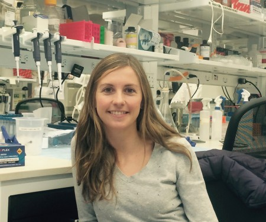
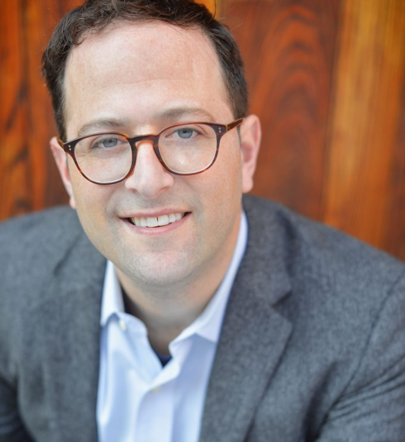

About the Organizers
The course organizers for NYC include:
Miriam Merad, MD, PhD
Miriam Merad, MD, PhD, is a Professor of Oncological Science and of Medicine (Hem/Onc division) at the Icahn School of Medicine at Mount Sinai in New York. Dr. Merad’s laboratory studies the mechanisms that regulate the development and function of innate myeloid cells including dendritic cells and macrophages. One of the major goals of her laboratory is to identify the contribution of these cells to the development and progression of tumor cells. Dr. Merad’s hypothesis suggests that tumors do not consist of a homogenous mass of genetically altered cells but rather include a large amount of innate myeloid cells that significantly contribute to tumor development. Dr. Merad established that tumor infiltrating dendritic cells could be targeted in vivo to promote the induction of tumor specific immunity. Currently, she is examining the contribution of tumor infiltrating macrophages to tumor progression and response to conventional and targeted therapies. She has authored more than 100 primary papers and review articles in high profile journals and obtained extensive NIH funding for her studies on dendritic cells and macrophage biology in mice and humans.
Hélène Salmon, PhD
Dr. Hélène Salmon did her PhD in Alain Trautmann and Emmanuel Donnadieu’s team in Paris where she studied T cell migration in human lung tumors through live imaging, and showed the key role played by the extracellular matrix in regulating T cell motility and distribution at the tumor site. Dr Salmon then joined the Merad laboratory and learned about myeloid cell biology to develop immunotherapeutic strategies modulating this cell compartment in solid tumors to enhance clinical response to existing therapies. She showed that the paucity of activated CD103+ dendritic cells (DCs) in tumors limits checkpoint blockade efficacy. Expansion and activation of CD103+ DC progenitors at the tumor site promote T cell activation and entry into the tumor, improving tumor response to PD-L1 inhibition (Immunity 2016). Taking advantage of her expertise in cell dynamics and the tumor microenvironment, Dr Hélène Salmon has started a research program focused on the understanding of stroma contribution to tumor immunity.
Amir Horowitz, PhD
Amir Horowitz, PhD is an Assistant Professor of Oncological Sciences and a member of the Precision Immunology Institute and the Tisch Cancer Institute at the Icahn School of Medicine at Mount Sinai. Dr. Horowitz’s work has contributed to developing an understanding of adaptive NK cells and their roles in microbial infections, cancers and following vaccination and transplantation. He pioneered the first studies of human NK cells by mass cytometry (CyTOFTM) and demonstrated an enormous breadth of phenotypic diversity and functions associated with specific HLA class I and KIR backgrounds. This research has led to the identification and characterization of numerous NK cell subset populations with unique activity and immunotherapeutic potential. This work and related future research will address his long-term career goal of understanding how immunogenetic variation governs the education of NK cells and their ability to function within dynamic environments.